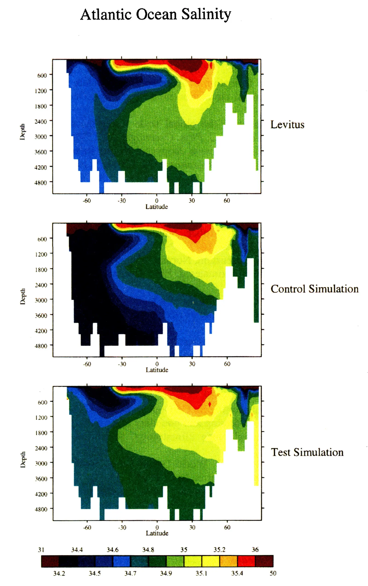

Sensitivity of simulated salinity in a three-dimensional ocean model to upper ocean transport of salt from sea-ice formation
Key finding. Distributing the salt rejected during sea-ice formation uniformly over the upper 160 m, instead of confining it to the top model layer, eliminates both the excessively fresh deep ocean and the missing Antarctic Intermediate Water salinity minimum, and produces a more realistic Antarctic Circumpolar Current.

What question did this research address?
When seawater freezes, the salt is expelled rather than incorporated into the ice, and the resulting dense brine sinks. Ocean general circulation models had represented this by placing the rejected salt in the topmost model layer.
Those models shared two persistent errors — a deep ocean that was too fresh, and a missing salinity minimum at intermediate depth. This paper asked whether the treatment of brine rejection was responsible.
What did we find?
In the control simulation, with rejected salt placed in the top model layer, simulated salinities show the errors typical of ocean general circulation models — the deep ocean is too fresh and the intermediate-depth salinity minimum associated with Antarctic Intermediate Water is absent.
In the test simulation, distributing the rejected salt uniformly over the upper 160 m, both problems disappear.
The strength of the Antarctic Circumpolar Current also becomes more realistic, so the improvement is not confined to the salinity field it was aimed at.
The paper is careful about what it has and has not achieved. It demonstrates the need for a better representation of sinking rejected salt without providing one — distributing salt uniformly over a fixed depth is a diagnostic device, not a physical model of the process.
Why does it matter?
The sensitivity is the substantive result. If a model's large-scale salinity structure and circulation depend this strongly on the vertical distribution of rejected brine, a similar sensitivity may exist in the real ocean.
That raises the stakes for Antarctic sea ice. If the ocean is as sensitive as the model, losing Antarctic sea ice would change the salinity and therefore the density structure of the global ocean, with effects reaching far beyond the Southern Ocean.
Citation
Philip B. Duffy and Ken Caldeira (1997). Sensitivity of simulated salinity in a three-dimensional ocean model to upper ocean transport of salt from sea-ice formation. Geophysical Research Letters 24, 1323-1326.